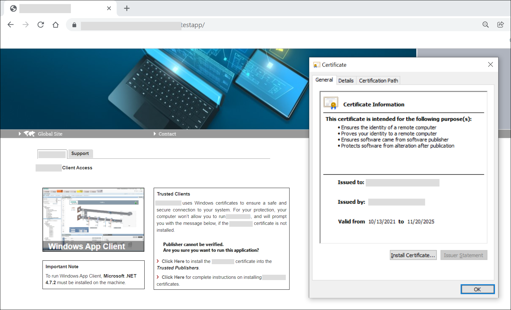

Browse a Website or Web Application URL
You can launch the Desigo CC Window app client by browsing the web application link on the local web server (IIS) or on the remote web server (IIS) hosted on a Client/FEP or on remote computer other than web server (IIS). For this you must install the website/web application certificates in the appropriate Windows certificate store.
You can launch the Desigo CC Window app client by browsing the website or web application URL in the supported browsers such as Microsoft Edge, Chrome, Firefox and Internet Explorer 11 onwards.

NOTE:
It is recommended upgrading and staying up-to-date on the latest browser version.
The following procedure provides the steps for launching the Desigo CC Window app client for the very first time by installing the website certificates. The steps may vary; for example, the Certificate Error: Navigation Blocked page may not display, if the website/web application certificate is already installed.
- You have reviewed the tips before launching the website or web application URL in Website and Web Application Certificates.
- In the SMC tree, select the website or web application.
NOTE: Clicking the website/web application URL in the SMC results in opening the Desigo CC web page in your default browser. It is recommended to launch the Desigo CC Window app client using either Microsoft Edge, Chrome, Firefox or Internet Explorer 11 onwards. - Click Copy URL to copy the HTTPs URL of a website/web application.
- Launch the browser.
- In the address bar, paste the copied URL.
- The Certificate Error: Navigation Blocked page displays. This error occurs if the self-signed or host certificate is not already available in the Windows Certificate stores. Usually this error does not occur for the commercial certificates.
- Install the website certificate.
- Close the browser.
- Re-launch the web application HTTPs URL.
- The error message
Certificate Error:Navigation Blockeddisappears and the Desigo CC web page with thumbnails for the Desigo CC Window app client displays. - Install the web application certificate for verifying the signature when downloading the application in the appropriate Windows certificate store.
- From the Desigo CC web page, depending on the client type, click the Desigo CC Window app client thumbnail and follow the installation wizard prompts that display (in the section on Running the Classic Client, see Start the Windows App Client).
